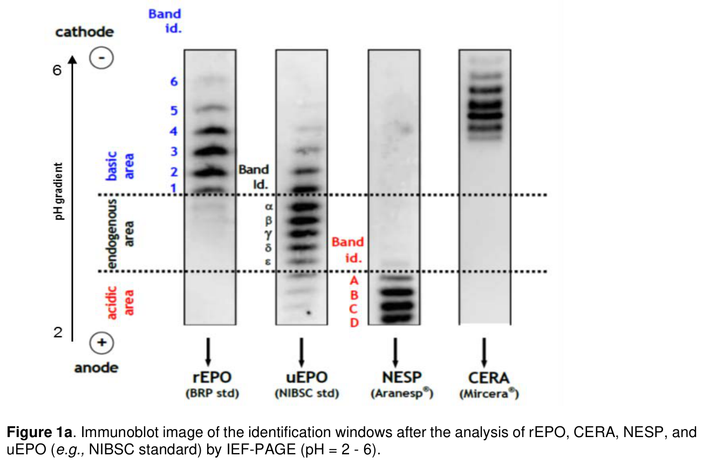
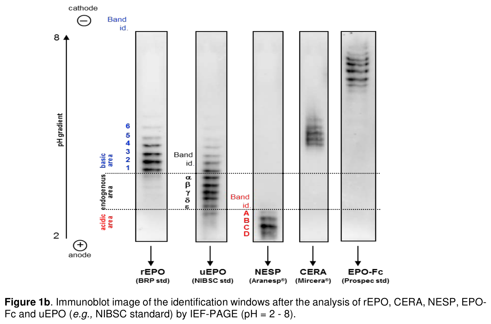
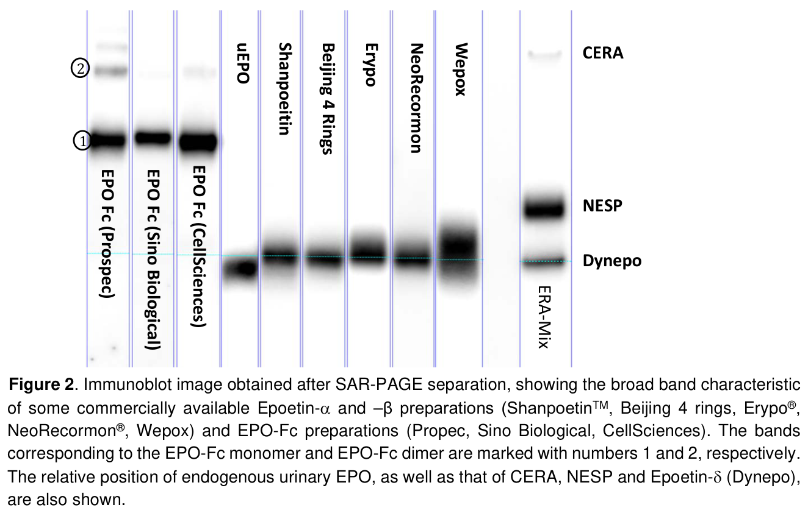
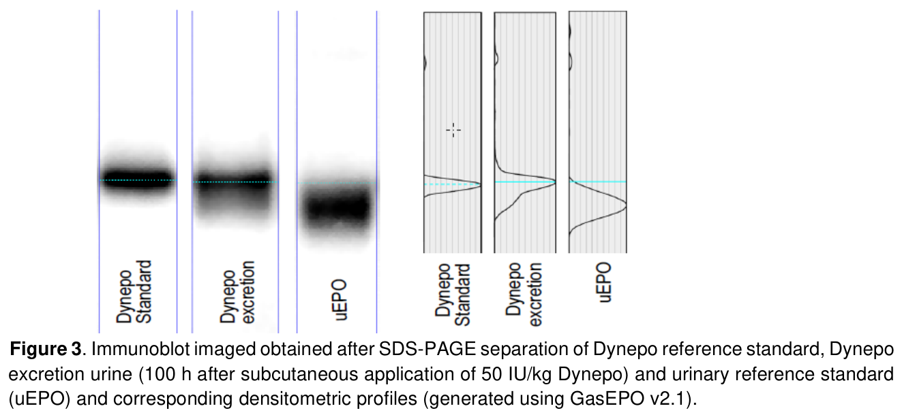
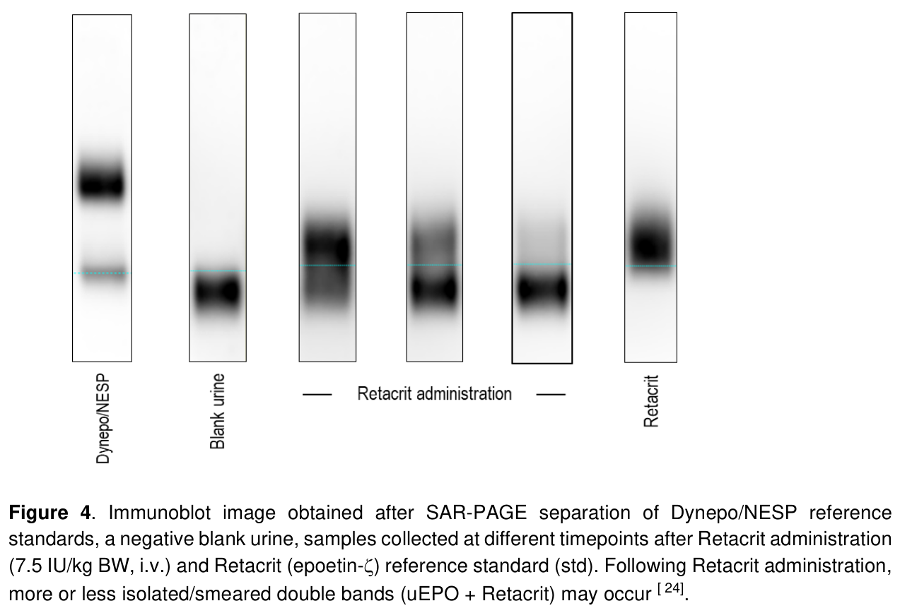
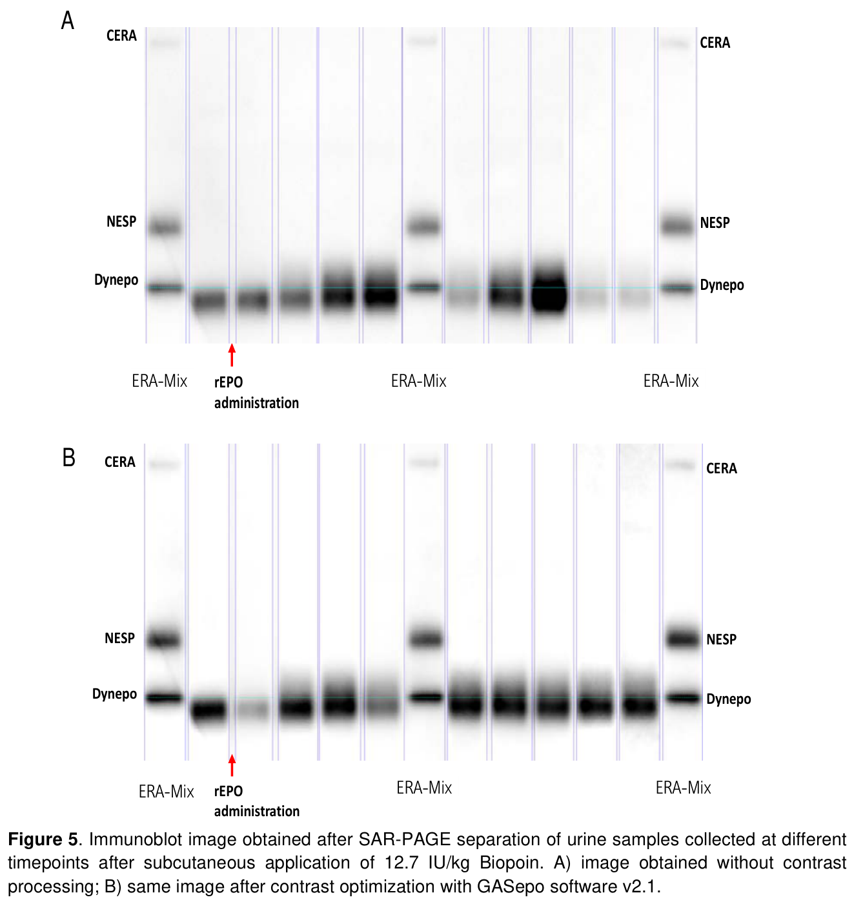
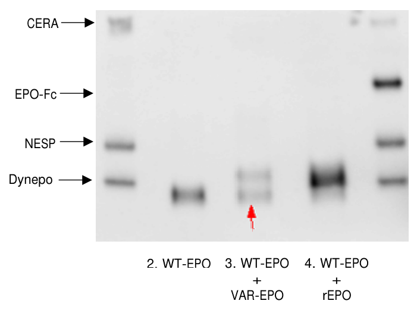
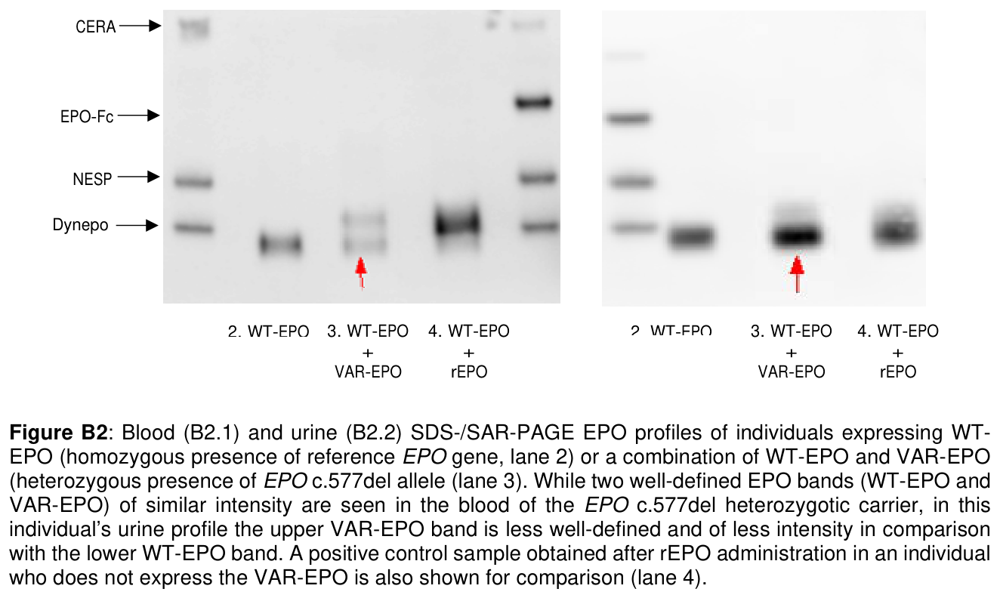
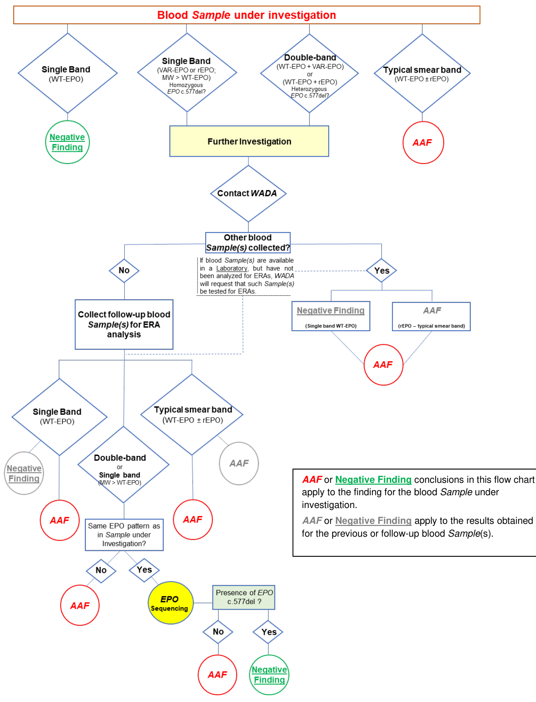
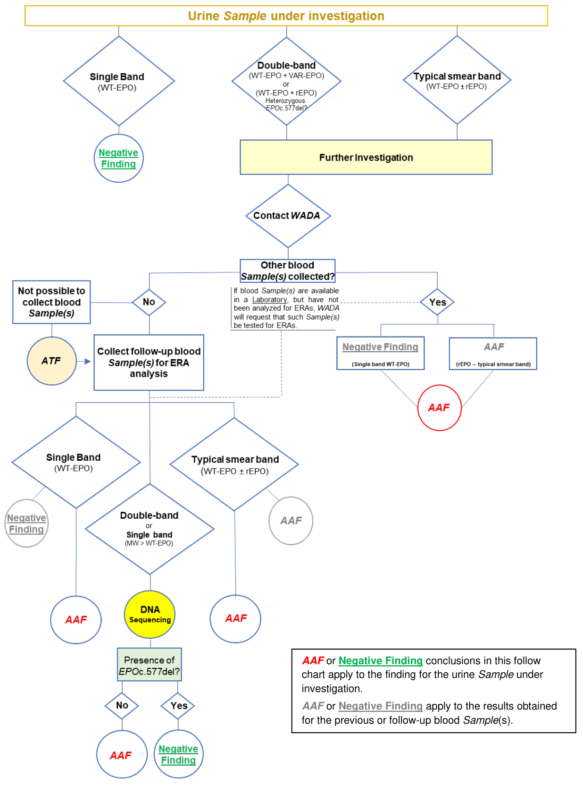

Technical Documents · TD2022EPO
Edition v1.0, 2022 (version 1.0) · effective 1 January 2022 · superseded
Retrieved on 25 November 2026 from https://www.wada-ama.org/sites/default/files/2023-02/td2022epo_v1.0_final_eng.pdf
Editions: v1.0, 2027 (current) · v1.0, 2024 · v1.0, 2022 · v2.0, 2021 · v1.0, 2014 · v1.0, 2013 · v2.0, 2009 · v2.0, 2007 · v1.0, 2005
p. 1
HARMONIZATION OF ANALYSIS AND REPORTING OF ERYTHROPOIETIN (EPO) AND OTHER EPO-RECEPTOR AGONISTS (ERAs) BY POLYACRYLAMIDE GEL ELECTROPHORETIC (PAGE) ANALYTICAL METHODS.
1.0 Introduction
This Technical Document (TD) has been established to harmonize the detection and reporting of erythropoietin (EPO) and other EPO-receptor agonists (ERAs) by Laboratories when analyzed using polyacrylamide gel-electrophoretic (PAGE) Analytical Methods. Whenever other techniques are available (e.g., LC-MS), reference to the applicable TD(s) is also made.
All Laboratories are required to apply the criteria established in this TD in the routine performance of PAGE Analytical Methods to identify ERAs in urine or plasma/serum Samples.
For the purposes of this TD, the following abbreviations, acronyms and trademarks are used:
- CERA (Mircera ® , Roche): Continuous Erythropoietin Receptor Activator, the erythropoietin analogue known by its International Non-proprietary Name (INN) as pegserpoetin, a methoxy-pegylated derivative of epoetin-β.
- EPO: Erythropoietin.
- EPO-Fc: Recombinant fusion protein comprising EPO linked to human immunoglobulin Fc domain.
- bEPO: endogenous erythropoietin as observed in human blood.
- dEPO: darbepoetin. Modified forms of erythropoietin with additional glycosylation sites (e.g., darbepoetin-α, NESP, CRESP, etc.).
- ERAs: Erythropoietin-Receptor Agonists, i.e., erythropoietins (EPO), recombinant erythropoietins (rEPO) and EPO-based constructs (e.g., NESP, CERA, EPO-Fc).
- IEF-PAGE: Isoelectric focusing - polyacrylamide gel electrophoresis.
- NESP (e.g., Aranesp ® , Amgen): Novel erythropoiesis stimulating protein, the erythropoietin analogue known by its INN as darbepoetin-α.
- SAR-PAGE: sodium N-lauroylsarcosinate ('sarcosyl') polyacrylamide gel electrophoresis.
- SDS-PAGE: sodium dodecyl sulfate polyacrylamide gel electrophoresis.
- rEPO: recombinant erythropoietin. These pharmaceutical substances are known by their INN as "epoetin". The different preparations are identified by a Greek letter, e.g., epoetin-α, -β, -ω, -δ. Other preparations (e.g., generics or copies) referred collectively as "rEPO biosimilars" may have differing isoform profiles not exactly matching those already referenced.
- uEPO: endogenous erythropoietin as observed in human urine.
p. 2
2.0 Analytical Testing for ERA(s)
2.1 Pre-Analytical Procedure
In order to reduce the possible degradation of ERAs and to maintain the stability and integrity of the Samples, the Laboratory shall establish Sample storage procedures that minimize time of storage at room and refrigerated temperatures.
2.1.1 Urine Samples
- It is recommended that urine "A" Samples are stored refrigerated as soon as possible after reception and frozen at approximately -20°C if ERA analysis is not started within twenty-four (24) hours of reception in the Laboratory. "A" Sample containers should be placed in/returned to frozen storage following the taking of Aliquot(s) for the ERA Initial Testing Procedure(s) (ITP) and thawed for the "A" Sample confirmation of Presumptive Adverse Analytical Finding(s) (PAAF), if applicable;
- Urine "B" Samples shall be stored frozen at approximately -20°C immediately after Sample reception and registration in the Laboratory;
- It is recommended that, following the conclusion by the Laboratory of an Adverse Analytical Finding (AAF) for the "A" Sample, the Laboratory transfers the corresponding "B" Sample container to freezing at -70°C or less to further minimize any risks of ERA degradation.
2.1.2 Blood Samples
- If ERA analysis is to be performed on the plasma fraction of blood Samples that have been collected for Analytical Testing on blood cellular fractions (e.g., hematological module of the Athlete Biological Passport, homologous blood transfusion), the ERA analysis shall be performed following the conclusion of the ITP(s), and any applicable "A" and/or "B" Confirmation Procedure(s) (CP), on the blood cellular fractions. Then, both "A" and "B" Samples shall be centrifuged for 10-15 min at 1300-1500 g as soon as is practical to obtain the blood plasma fraction;
- If ERA analysis is to be performed on the serum fraction of blood Samples, the Samples shall be centrifuged for 10-15 min at 1300-1500 g as soon as possible after reception in the Laboratory;
- Once separated by centrifugation, the "A" Sample plasma or serum fraction (contained in the "A" Sample collection tube) and/or the "A" Sample plasma or serum Aliquot(s) may be stored refrigerated for a maximum of twenty-four (24) hours or frozen at approximatively -20°C until analysis. In all circumstances, the Laboratory shall take the appropriate steps to maintain the integrity of the Sample;
p. 3
- "A" Sample plasma or serum Aliquots used for "A" CP shall be analyzed as soon as possible after thawing;
- It is recommended that, following centrifugation, "B" Samples be immediately stored frozen at approximatively -20°C in the sealed "B" Sample collection tube according to established protocols until ERA analysis, if applicable. Alternative validated protocols for the handling of the "B" Sample may be applied as long as the integrity of the "B" Sample is maintained;
- "B" Sample plasma or serum Aliquots shall be analyzed as soon as possible after thawing.
2.2 Analytical Testing Strategy
2.2.1 Polyacrylamide Gel-Electrophoretic (PAGE) Analytical Methods
The Analytical Testing strategy to be followed for the use of PAGE Analytical Methods is described below and summarized in Table 2.
2.2.1.1 Initial Testing Procedure (ITP)
- Immunopurification shall be performed prior to the electrophoretic separation of ERAs[1-8]).
[Comment: For immunopurification, anti-EPO antibodies other than the one used for immunoblotting shall be used.]
The Laboratory shall demonstrate through method validation that the immunopurification methodology employed does not change the IEF-PAGE glycoform profiles or the SAR-/SDS-PAGE behavior of the endogenous EPO and the ERA(s) being analyzed;
- The Laboratory may apply IEF-PAGE[1, 6-8] and/or SAR-PAGE[7, 9-12] or SDS-PAGE[13, 14] for the ITP. When applying SDS-PAGE, an appropriate carrier protein (e.g., casein, insulin) shall be added to the immunopurified eluate and an appropriate discontinuous blotting buffer system (e.g., CAPS buffer) or an alternative buffer system ensuring the effective transfer of large biomolecules (e.g., CERA, EPO-Fc) shall be used for the immunoblotting procedure[15];
- It is recommended that, after electrophoretic separation, Laboratories apply a single blotting procedure using a cross-reactivity minimized protocol [for example, using the biotinylated monoclonal mouse anti-human EPO clone AE7A5 (R&D Systems BAM2871)][15, 16];
[Comment: While the application of a single blotting procedure using a biotinylated primary antibody is a recommendation, Laboratories may select to apply an alternative cross-reactivity minimized protocol, such as the use of the primary antibody in conjunction with a conjugated secondary antibody, as long as this approach is Fit-for-Purpose and allows meeting the Selectivity and sensitivity requirements of the ITP.]
p. 4
- The ITP shall incorporate, as a minimum, the PAGE analysis of the following:
- "A" Sample Aliquot;
- Negative quality control (NQC) sample;
[Comment: Quality Control (QC) samples are samples prepared in Sample matrix which undergo the same analytical procedure as the Sample being subject to Analytical Testing (e.g., sample preparation procedure, instrumental analysis, etc.)]
- Reference standard solutions: Appropriate preparation(s) of ERA standards spiked in sample buffer, used as reference enabling to define basic, acidic and endogenous areas (IEF-PAGE) or apparent molecular mass of ERAs (SAR- or SDS-PAGE).
- In addition, the Laboratory may consider the use of test sensitivity controls:
- Test sensitivity controls: ERA standards, including also endogenous EPO, spiked in sample buffer at levels representative of an eluate obtained after immunopurification of a Sample containing ERA(s) at levels close (80-120%) to the Minimum Required Performance Levels (MRPL) of the PAGE method, as defined in Table 1.
[Comment: When used by the Laboratory, test sensitivity controls serve to verify that the electrophoretic separation method is working as expected in accordance with validation results. However, a failed sensitivity test shall not invalidate the detection of exogenous ERA(s) in a Sample during the ITP (or the CP, if needed), where the gel image fulfils the applicable acceptance and identification criteria described in Article 2.4. For more information on the use of the test sensitivity controls, refer also to Articles 2.2.1.2 and 2.4.1.]
It is recommended that the rEPO content in the test sensitivity control be between a 10:90 and 40:60 proportion (ratio) of rEPO:endogenous EPO.
Laboratories may consider implementing test sensitivity controls at levels lower than 80-120% of the MRPL and closer to their own validated Limits of Detection (LODs).
For a gel containing both urine and serum/plasma Samples, a single test sensitivity control prepared at ERA concentrations close to the lower matrix-specific MRPL may suffice.]
- The corresponding LOD of the ITP (including ERA immunopurification, electrophoretic separation and immunodetection), as estimated in the matrix of analysis (maximum 15 mL of urine, or 0.5 mL of serum or plasma) during method validation shall not be higher than (≤) 50% of the corresponding MRPL (Table 1).
p. 5
Table 1. MRPL of ERAs analyzed by PAGE methods (in Sample matrix)
| Target ERA. | Matrix of Analysis.Urine | Matrix of Analysis.Serum / Plasma |
|---|---|---|
| rEPO | 1 IU/L* | 10 IU/L * |
| dEPO | 1 pg/mL | 10 pg/mL |
| CERA | 5 pg/mL | 25 pg/mL |
| EPO-Fc | 5 pg/mL | 25 pg/mL |
- Defined based on content of rEPO in samples containing both rEPO and endogenous EPO (mixed band on gel).
2.2.1.2 "A" Sample Confirmation Procedure (CP)
The "A" Sample CP shall be performed on a new Aliquot of Sample "A".
The CP shall depend on the ERA(s) presumptively found and the methodology employed for the ITP.
- Immunopurification shall be performed prior to the electrophoretic separation of ERAs[1-8];
[Comment: For immunopurification, anti-EPO antibodies other than the one used for immunoblotting shall be used.]
- After electrophoretic separation, the potential cross-recognition of proteins/peptides not related to the ERA(s) under confirmation shall be minimized. Laboratories shall apply either a single blotting procedure using a cross-reactivity minimized protocol [for example, using the biotinylated monoclonal mouse anti-human EPO clone AE7A5 (R&D Systems BAM2871][15, 16] or, alternatively, a double-blotting procedure;
- When needed and based on the results from the ITP, the volume of the confirmation Aliquot taken from the "A" Sample or the volume of the eluate obtained after immunopurification of the Aliquot should be adjusted to ensure an appropriate ERA signal and facilitate the interpretation of results;
p. 6
- The "A" CP shall incorporate, as a minimum, the PAGE analysis of the following:
- "A" Sample confirmation Aliquot;
[Comment: The "A" Sample Aliquot being confirmed shall be loaded in a lane flanked by empty lanes to avoid signal interference from adjacent lanes.]
- NQC sample;
- Positive quality control (PQC) sample(s) containing the appropriate ERA(s) (e.g., rEPO, NESP, CERA, EPO-Fc);
[Comment: PQC(s) shall be selected based on the results of the ITP, which provide indication of which ERA(s) is to be confirmed, as well as their expected signal intensities on gel. The Laboratory may choose to use more than one PQC differing on concentration levels of target ERA(s) (for example, low and high ERA concentrations).
The electrophoretic behavior of the ERA(s) in the PQC may not match exactly that of the ERA(s) in the Sample. For example, different kinds of rEPOs may have different migration patterns on the gel, or the ratio of rEPO to endogenous EPO may differ. The migration of the Sample's ERA in the gel may also depend on the route of administration[17]. On occasions, a reference standard for the ERA detected in the Sample may not be available].
- Reference standard solutions: Appropriate preparation(s) of ERA standards spiked in sample buffer, used as reference enabling to define basic, acidic and endogenous areas (IEF-PAGE) or apparent molecular mass (SAR-PAGE, SDS-PAGE).
- In addition, the Laboratory may also consider the use of test sensitivity controls;
[Comment: Test sensitivity controls may be useful for CP of PAAF which result from a low content of ERAs leading to a faint signal on gel (i.e., close to the LOD of the electrophoretic separation method), which cannot be compensated by a higher Aliquot or eluate volume or controlled by the use of available PQC(s). In those cases, the use of the sensitivity controls allows to discriminate signal loss due to ERA degradation in the Sample from failed electrophoretic performance. This may be particularly important for "B" confirmations.]
- The "A" CP should differ, where necessary, from the ITP. This difference may apply, for example (but not limited), to any of the following:
- Application of a different Sample preparation procedure, including use of a different antibody or combination of antibodies for immunopurification;
- Use of a different electrophoretic separation technique (IEF-PAGE vs. SDS-PAGE vs. SAR-PAGE, where applicable);
- Performance of double-blotting where single blotting using a biotinylated antibody is applied for the ITP;
- Use of a different detection antibody.
[Comment: The WADA International Standard for Laboratories (ISL)[18] establishes that affinity-binding assays applied for the ITP(s) and CP(s) shall use affinity reagents (e.g., antibodies) recognizing different epitopes of the macromolecule analyzed, unless a purification (e.g., p. 7 immunopurification) or separation method (e.g. electrophoresis, chromatography) is used prior to the application of the affinity-binding assay to eliminate the potential of cross-reactivity. In this regard, the Selectivity of the PAGE Analytical Methods is provided by the combination of three (3) different physio-biochemical principles of target ERA separation and immune recognition:
i. Initial immunopurification with an EPO-binding antibody;
ii. Physical separation by electrophoresis based on either electric charge (IEF-PAGE) or molecular mass (SAR-/SDS-PAGE);
iii. Immune recognition (affinity binding) of target ERA by immunoblotting using an EPO-binding antibody different from that used for the immunopurification.]
- The CP of rEPOs shall be performed by SAR-PAGE or SDS-PAGE.
[Comment: The Laboratory may decide to apply a second, complementary confirmation PAGE Analytical Method, such as IEF-PAGE, as additional scientific evidence of the presence or absence of rEPO in the Sample (see also Article 3.0).]
- The same PAGE Analytical Method (SAR-PAGE or SDS-PAGE) may be applied for both the ITP and the CP.
2.2.1.2.2 dEPOs (e.g. NESP), CERA and EPO-Fc
- For the CP of dEPOs (e.g., NESP), CERA and EPO-Fc the Laboratory may choose to apply IEF- or SAR- or SDS-PAGE. For the use of SDS-PAGE for the CP of CERA and EPO-Fc, an appropriate carrier protein (e.g., casein, insulin) shall be added to the immunopurified eluate and an appropriate discontinuous blotting buffer system (e.g., CAPS buffer) or an alternative buffer system ensuring the effective transfer of these large biomolecules shall be used for the immunoblotting procedure.
At its discretion, the Laboratory may also use a combination of IEF-PAGE and either SAR- or SDS-PAGE.
[Comment: The Laboratory may decide to apply a second, complementary confirmation PAGE Analytical Method as additional scientific evidence of the presence or absence of dEPO, CERA or EPO-Fc in the Sample.]
- The same PAGE Analytical Method (IEF- or SAR-PAGE or SDS-PAGE) may be applied for both the ITP and the CP.
p. 8
2.2.1.3 "B" Sample Confirmation Procedure (CP)
- For the "B" Sample CP, the Laboratory shall use the same PAGE Analytical Method(s) used for the "A" Sample CP;
[Comment: When the Laboratory has used a second, complementary confirmation Analytical Method as additional scientific evidence of the presence of ERA(s) in the "A" Sample, the application of the two (2) confirmatory Analytical Methods is not necessary during the "B" Sample CP. The use of any confirmation Analytical Method leading to conclusive results for the "A" Sample is sufficient to confirm the presence of the ERA(s) in the "B" Sample.]
- The PAGE "B" CP shall incorporate, as a minimum, the analysis of the "B" Sample Aliquot, ERA standard preparations and QC samples (NQC, PQC). In addition, if a test sensitivity control for a low-content ERA was used during the "A" CP, a similar test sensitivity control should be analyzed during the "B" CP;
[Comment: The "B" Sample Aliquot being confirmed shall be loaded in a lane flanked by empty lanes to avoid signal interference from adjacent lanes.]
When needed and based on the results from the "A" CP, the volume of the Aliquot taken from the "B" Sample or the volume of the eluate obtained after immunopurification of the Aliquot should be adjusted to ensure an appropriate ERA signal and facilitate the interpretation of results.
Table 2. Analytical Testing strategy for ERAs in urine and blood (serum/plasma) by PAGE Analytical Methods.
| ERAs | ITP | CP |
|---|---|---|
| rEPO | IEF-PAGE and/or (SAR-PAGE or SDS- PAGE*) | SAR- or SDS-PAGE |
| dEPO (e.g., NESP) | IEF-PAGE and/or (SAR-PAGE or SDS- PAGE*) | IEF- or SAR- or SDS-PAGE |
| CERA** | IEF-PAGE and/or (SAR-PAGE or SDS- PAGE*) | IEF- or SAR- or SDS-PAGE* |
| EPO-Fc** | IEF-PAGE and/or (SAR-PAGE or SDS- PAGE*) | IEF- or SAR- or SDS-PAGE* |
- For the use of SDS-PAGE in the ITP, or for the CP of CERA and EPO-Fc, an appropriate carrier protein (e.g., casein, insulin) shall be added to the immunopurified eluate and an appropriate discontinuous blotting buffer system[15] (e.g., CAPS buffer) or an alternative buffer system ensuring the effective transfer of large biomolecules shall be used for the immunoblotting procedure.
** Due to their large size, which may affect their renal clearance and excretion in urine, CERA and EPO-Fc are more effectively detected in blood (serum/plasma) than in urine[19 - 21].
p. 9
2.2.2 Other (non-electrophoretic) Analytical Methods
- For the CP of specific ERAs (e.g., EPO-Fc), the Laboratory may also apply, at its discretion, substance-specific Analytical Methods (e.g., immunoassays), as additional scientific evidence to arrive at a final conclusion[21];
- In all cases, where a Fit-for-Purpose mass spectrometry (MS)-based Analytical Method is available[22], it can be used for either or both the ITP and the CP(s). In that case the identification criteria, described in the TD IDCR[23], shall be met.
2.3 Description of the PAGE Analytical Methods
2.3.1.1 Sample Preparation
- For both the ITP and the CP, immunopurification shall be performed prior to the electrophoretic separation[1-8].
[Comment: For immunopurification, antibodies other than the one used for immunoblotting shall be used.]
2.3.1.2 Electrophoretic Separation
- IEF-PAGE is performed in a pH range compatible with the isoelectric points (pI) of the ERA(s) under analysis. IEF-PAGE is performed under denaturing conditions (approximately 7M urea).
2.3.1.3 Immunoblotting
- Immunoblotting shall be performed by electroblotting to optimize the transfer of the ERA(s);
- After IEF-PAGE separation, single-blotting using a cross-reactivity minimized protocol [e.g. using the biotinylated monoclonal mouse anti-human EPO clone AE7A5 (R&D Systems BAM2871)][15, 16] or double-blotting shall be performed.
[Comment: For the analysis of EPO-related ERAs, the monoclonal mouse anti-human EPO clone AE7A5 is the primary antibody recommended to be used for this step. However, at the Laboratory's discretion, other anti-human EPO antibodies with validated similar specificity and sensitivity characteristics may be used.]
2.3.1.4 Detection
- The isoelectric patterns of ERAs are detected by the use of an appropriate, sensitive detection system (e.g., amplified chemiluminescent system). The signal obtained using densitometry must be quantifiable in order to determine the relative intensities of the different isoforms of an ERA pattern.
p. 10
2.3.2 SAR-PAGE[7, 9-12] and SDS-PAGE[13 - 15]
2.3.2.1 Sample Preparation
- For both the ITP and the CP, immunopurification shall be performed prior to the application of SAR- or SDS-PAGE[1-8].
[Comment: For immunopurification, antibodies other than the one used for immunoblotting shall be used.]
2.3.2.2 Electrophoretic Separation
- Vertical electrophoresis shall be applied;
- It is recommended to use 10% acrylamide (%T) gels for the separation of EPO-related ERAs;
- For SAR-PAGE, SDS in sample and running buffers is replaced by sodium N-lauroylsarcosinate;
- When using SDS-PAGE in the ITP for ERAs, or for the CP of CERA and EPO-Fc, an appropriate carrier protein (e.g., casein, insulin) shall be added to the immunopurified eluate before the electrophoretic separation;
- For the CP of rEPO, Epoetin-δ (Dynepo) should be used as a reference for placing a rEPO migration cut-off line (this requirement is optional for the ITP);
- NESP, CERA and EPO-Fc shall be present to define other ERAs' electrophoretic behavior.
2.3.2.3 Immunoblotting
- Immunoblotting shall be performed by electroblotting to optimize the transfer of the ERA(s);
- For the ITP and CP of urine and serum/plasma Samples, single- or double-blotting may be applied after the electrophoretic separation, in accordance with an appropriate Laboratory method validation. When using single blotting, a cross-reactivity minimized protocol shall be applied (e.g., use of the biotinylated monoclonal mouse anti-human EPO clone AE7A5 (R&D Systems BAM2871)[15, 16]);
[Comment: For the analysis of EPO-related ERAs, the monoclonal mouse anti-human EPO clone AE7A5 is the primary antibody recommended to be used for this step. However, at the Laboratory's discretion, other anti-human EPO antibodies with validated similar specificity and sensitivity characteristics may be used.]
- Several blotting buffers may be used (e.g., Bjerrum, CAPS, Kyhse-Andersen, Towbin), which shall be validated as Fit-For-Purpose. When using SDS-PAGE in the ITP or for the CP of CERA or EPO-Fc, the use of a discontinuous buffer system (e.g., CAPS buffer) or an alternative buffer system ensuring the effective transfer of these large biomolecules is mandatory.
p. 11
2.3.2.4 Detection
- The electrophoretic patterns of ERAs are detected by the use of an appropriate, sensitive detection system (e.g., amplified chemiluminescent system).
2.4 Evaluation and Interpretation of Results
2.4.1 Acceptance criteria
The acceptance criteria for the IEF-PAGE and SAR- or SDS-PAGE procedures define the requisites that an image shall fulfil to allow the application of the identification criteria in order to ascertain the presence of ERAs.
Spots, areas of excessive background or of absent signal (e.g., bubbles) in a lane that significantly interfere with the application of the identification criteria shall invalidate the lane;
[Comment: When used by the Laboratory, test sensitivity controls serve to verify that the electrophoretic separation method is working as expected in accordance with validation results. If a sensitivity control(s) fails and the corresponding ERA band(s) are not detected in the Sample(s) either, this may be an indication of a problem in the performance of the electrophoretic method, and in such cases the Laboratory should repeat the ITP or CP, as applicable, for the negative Sample(s) using a new preparation of test sensitivity control(s).
However, when a sensitivity test fails for an ERA(s) this shall not invalidate the detection of the ERA(s) in a Sample in either the ITP or the CP where the Sample gel image fulfils the applicable acceptance and identification criteria described in this Article 2.4.]
2.4.2 Identification Criteria
The identification criteria described herein are applied to CP. However, recommendations are given, as guidance, for criteria to be applied to the ITP when evaluating IEF-PAGE results for rEPOs.
2.4.2.1 IEF-PAGE
Figures 1a and 1b show illustrations of IEF-PAGE test results obtained with a pH gradient of 2-6 or 2-8, respectively. The identification windows for each electrophoretic lane as well as the basic, endogenous and acidic areas are defined. Bands of the preparations used as reference are identified by numbers and letters.
[Comment: Figures 1a and 1b illustrate examples of IEF-PAGE gel images of different ERA reference standards; in an authentic Sample the presence of endogenous EPO or a combination of endogenous EPO and ERA(s) may also be detected.]
The basic and acidic areas are defined, as described, by the position of the bands corresponding to a rEPO reference preparation or pure epoetins-α or -β and NESP; by exclusion, the endogenous area is defined in between as exemplified by uEPO (International Reference Preparation, IRP, from the National Institute for Biological Standards and Control, NIBSC, UK).
p. 12
[Comment: The preparation used as a reference for rEPO should be a preparation that is either intended for use in polyacrylamide gel electrophoresis, immunoblotting and other physicochemical tests or for in vitro tests.]
The bands of rEPO, uEPO and NESP in the basic, endogenous and acidic areas, respectively, are identified by numbers, Greek letters and Latin capital letters, respectively, as shown in the figures. CERA shows a different, specific band pattern with some bands approximately co-localized with those defined by rEPO and others interspersed amongst rEPO bands. EPO-Fc is also identified by a specific band pattern after reduction of EPO disulfide bridges prior to IEF-PAGE on a pH 2-8 gradient (Fig. 1b), with bands located in the very basic area above those of rEPOs and their analogues[8].
[Comment: For some ERAs, the iso-electrophoretic pattern may be different from that of ERA standards or PQC samples (e.g., presence of different number of bands, slightly different focusing profile on gel) depending on the source of the particular preparation analyzed.]
a. rEPO
When IEF-PAGE is applied to the ITP for rEPOs, the following criteria are recommended to consider a PAAF for rEPO:
- In the Laboratory's opinion, the IEF-PAGE profile deviates from that of endogenous EPO; and/or
- In the basic area (Fig. 1a and 1b) there must be at least 3 acceptable, consecutive bands; and
- The 2 most intense bands measured by densitometry shall be in the basic area.
b. dEPOs, CERA, EPO-Fc
The image shall fulfil the following identification criteria to consider an AAF for the presence of NESP, CERA or EPO-Fc:
o dEPOs (e.g., NESP):
- In the acidic area (Fig. 1a and 1b) there must be at least 3 acceptable, consecutive bands assigned as "A", "B", "C" or "D";
- If there is endogenous signal, then at least one band in the "acidic area" must be more intense than the last band of the endogenous area (e.g., band ε in Fig. 1a and 1b).
p. 13
o CERA:
- In the basic area, there must be at least 4 consecutive bands corresponding with the CERA preparation used as reference (Fig. 1a and 1b).
o EPO-Fc:
- In the basic area, there must be at least 4 consecutive bands corresponding with the EPO-Fc preparation used as reference (Fig. 1b).

Figure 1a. Immunoblot image of the identification windows after the analysis of rEPO, CERA, NESP, and uEPO (e.g., NIBSC standard) by IEF-PAGE (pH = 2 - 6).
p. 14

Figure 1b. Immunoblot image of the identification windows after the analysis of rEPO, CERA, NESP, EPO Fc and uEPO (e.g., NIBSC standard) by IEF-PAGE (pH = 2 - 8).
2.4.2.2 SAR- or SDS-PAGE
The identification criteria for SAR- and SDS-PAGE applied by comparison with proper ERA standards and PQC samples are the same. SAR-PAGE may result in higher sensitivity for detection of CERA.
ERAs can be distinguished from endogenous EPO (uEPO, bEPO) based on their characteristic band shape and different apparent molecular mass. The migration behaviour (band) of each ERA, i.e., its position and shape (width, focused or more diffused) can be used to confirm the identity and/or exogenous origin of the substance. The position of the band apex (as determined by the lane profile plot retrieved in the image processing software) or the boundaries of the width of the band can be used to ascertain that its position and shape differs from the position of endogenous EPO run in parallel, as illustrated in Fig. 2.
For detection of rEPO, in particular, refer also to Annex B - EPO c.577del Variant (below).
p. 15

Figure 2. Immunoblot image obtained after SAR-PAGE separation, showing the broad band characteristic of some commercially available Epoetin-α and -β preparations (ShanpoetinTM , Beijing 4 rings, Erypo ® , NeoRecormon ® , Wepox) and EPO-Fc preparations (Propec, Sino Biological, CellSciences). The bands corresponding to the EPO-Fc monomer and EPO-Fc dimer are marked with numbers 1 and 2, respectively. The relative position of endogenous urinary EPO, as well as that of CERA, NESP and Epoetin-δ (Dynepo), are also shown.
[Comment: For some ERAs, the electrophoretic behaviour may be different from that of ERA standards or PQC samples (e.g. presence of different number of bands, slightly different migration on gel) depending on the source of the particular preparation analyzed (for example, presence of single band for monomeric EPO-Fc and/or other bands of EPO-Fc oligomers, Fig. 2; broader band or different migration pattern on SAR-/SDS-PAGE for some ERA preparations depending on purity and/or glycoform composition). Additional bands, corresponding to the light and heavy chains of the antibodies used for immunopurification may also be present and do not interfere with the interpretation of the results. Such antibody bands resulting from the sample preparation process shall be consistently present in Samples and quality control samples.
There is a significant difference in the migration of CERA on SAR- vs. SDS-PAGE. While on SAR-PAGE, CERA migrates above the second EPO-Fc band (EPO-Fc dimer), on SDS-PAGE it migrates between the EPO-Fc monomer and EPO-Fc dimer bands (see Fig. 2).]
The following identification criteria define the requisites that the SAR- or SDS-PAGE image from the CP shall fulfil to consider an AAF for the presence of ERAs with a structure related to EPO (rEPO, NESP, CERA, EPO-Fc).
p. 16
a. Single ERA Band(s) Detected
- rEPO
- Epoetin-α and -β as well as the rEPO biosimilars have characteristic band shapes ("broad band") and different (typically higher) apparent molecular masses than endogenous uEPO/bEPO (Fig. 2);
- To consider an AAF for rEPO, the smear characteristic of the band shape for rEPO shall extend beyond the position defined by the band apex of Epoetin-δ (Dynepo) (Fig. 2 and 3);
- Epoetin-δ (Dynepo) has a characteristic band shape ("sharp band") and higher apparent molecular mass than endogenous uEPO/bEPO. Due to the sharper band (albeit a faint smear may also be present in both the Dynepo standard and Dynepo administration samples, representing glycoforms of higher mass), Epoetin-δ can be also differentiated from other rEPOs (-α and -β as well as the biosimilars) (Fig. 2). To consider an AAF for Epoetin-δ, the band apex line of the ERA in the Sample shall coincide with the corresponding apex line in the Epoetin-δ reference preparation (Fig. 3).
- dEPO, CERA, EPO-Fc
- NESP, CERA and EPO-Fc (Fig. 2) can be distinguished from endogenous EPOs (uEPO, bEPO) as well as from rEPOs based on their higher apparent molecular masses. To consider an AAF for any of these Prohibited Substances, the apparent molecular mass of the ERA band(s) corresponds to the apparent mass of the corresponding band(s) from the dEPO, CERA or EPO-Fc preparation used as reference (see also Comment in Article 2.4.2.2).

Figure 3. Immunoblot imaged obtained after SDS-PAGE separation of Dynepo reference standard, Dynepo excretion urine (100 h after subcutaneous application of 50 IU/kg Dynepo) and urinary reference standard (uEPO) and corresponding densitometric profiles (generated using GasEPO v2.1).
p. 17
b. Mixed Bands from Different ERA(s) Detected
- In the case of rEPO, a mixed band consisting of endogenous EPO (uEPO, bEPO) and rEPO not completely resolved can be detected: the band shape resembles that of the rEPO plus parts or the total of the uEPO/bEPO band;
- A diffuse or faint area of the band above the corresponding endogenous band, which extends beyond the band apex of Epoetin-δ (Dynepo), is also indicative for the presence of epoetin-α and -β (Fig. 4 and 5).
- A mixed band will change depending on the relative amount of rEPO and uEPO present in the Sample, as happens at different times after rEPO administration (Fig. 4 and 5).

Figure 4. Immunoblot image obtained after SAR-PAGE separation of Dynepo/NESP reference standards, a negative blank urine, samples collected at different timepoints after Retacrit administration (7.5 IU/kg BW, i.v.) and Retacrit (epoetin-ζ) reference standard (std). Following Retacrit administration, more or less isolated/smeared double bands (uEPO + Retacrit) may occur[ 24].
p. 18
c. Multiple separated ERA bands detected
- Multiple bands corresponding to different ERAs (e.g., u/bEPO, rEPO, NESP, CERA and EPO Fc) or the same ERA (e.g., EPO-Fc) are detected in the same Sample. The individual identification criteria as described for each ERA shall apply.

Figure 5. Immunoblot image obtained after SAR-PAGE separation of urine samples collected at different timepoints after subcutaneous application of 12.7 IU/kg Biopoin. A) image obtained without contrast processing; B) same image after contrast optimization with GASepo software v2.1.
p. 19
3.0 Documentation and Reporting
When reporting results based on the application of the IEF-PAGE and/or SDS-PAGE or SAR-PAGE, the Laboratory shall comply with the requirements of the ISL[18] and its associated TD LDOC[25].
3.1 Adverse Analytical Findings (AAF)
For reporting an AAF for ERA(s), results from the CP(s) need to fulfil the quality and identification criteria described in this TD.
When reporting an AAF for ERA(s) detected in the "A" Sample, it is recommended that the Laboratory makes a comment in the Sample's Test Report in ADAMS if any sign of microbial[26] and/or proteolytic activity[27] (for example, decrease in signal intensity between ITP and the CP), which may affect the stability of the ERA(s) detected, is suspected in the Sample.
When results from the CP for NESP, CERA or EPO-Fc are inconclusive (e.g., presence of interferences, band(s) intensity too low to ensure reliable identification), the Laboratory may decide to apply an additional Analytical Method for confirmation to obtain conclusive scientific evidence. If the results of the second confirmation Analytical Method conclusively fulfil the applicable identification criteria, then the results of the ERA analysis shall be reported as an AAF for NESP, CERA or EPO-Fc, as applicable.
[Comment: When the signal of the ERA band is too low to ensure reliable identification, the Laboratory should explore measures to improve the signal (e.g., repeat the analysis using a larger Aliquot volume or improve the signal acquisition and contrast) and/or test for the presence of signals of microbial contamination[26] or proteolytic activity[27] in the Sample.]
3.2 Atypical Findings (ATF)
When results from the SDS- or SAR-PAGE CP for rEPOs are inconclusive (e.g., presence of interferences, band(s) intensity too low to ensure reliable identification), the results of the ERA analysis shall be reported as an ATF.
When results from the CP for NESP, CERA or EPO-Fc are inconclusive (e.g., presence of interferences, band(s) intensity too low to ensure reliable identification), and the Laboratory applies a second, additional confirmation Analytical Method, which also produces inconclusive results, the ERA analysis shall be reported as an ATF.
Furthermore, the Laboratory shall make a comment in the Sample's Test Report in ADAMS if there is any sign of microbial[26] and/or proteolytic activity[27] in the Sample which may have affected the stability of the ERA(s) detected.
p. 20
3.3 Negative Findings
When the results from the CP(s) for ERAs do not fulfil the quality and identification criteria described in this TD, the results of the ERA analysis shall be reported as a Negative Finding.
When results from the CP for NESP, CERA or EPO-Fc are inconclusive (e.g., presence of interferences, band(s) intensity too low to ensure reliable identification), and the Laboratory applies a second, additional confirmation Analytical Method with negative results, then the ERA analysis shall be reported as a Negative Finding.
When no electrophoretic band is detected in the Sample's lane [i.e., no band signal for endogenous EPO and any of the exogenous ERA(s)], the results of the ERA analysis shall be reported as a Negative Finding. However, the Laboratory should make a comment in the Sample's Test Report in ADAMS, specifying the absence of ERA signal and any signs of microbial[26] and/or proteolytic activity[27] if suspected in the Sample.
[Comment: If a urine Sample is associated with either:
i) a non-confirmed PAAF or an "A" Sample AAF with low-intensity signals for large ERAs (EPO-Fc, CERA), or
- ii) an ATF for any ERA, or
- iii) a Negative Finding with no electrophoretic ERA band detected, The Laboratory should recommend the Testing Authority to perform ERA analysis on blood Sample(s) [and other urine Sample(s)] collected from the Athlete (for example, if an associated blood Sample has been collected during the same Sample Collection Session). In the absence of other collected blood or urine Sample(s), the Laboratory shall also recommend the Testing Authority to collect further urine and/or blood Sample(s) from the Athlete for ERA analysis as soon as possible.]
3.4 Provision of a Second Opinion
WADA requires that a second opinion for electrophoretic methods is provided by one of the experts of the WADA EPO Working Group before any AAF or ATF for ERAs is reported in ADAMS.
[Comment: The List of EPO Working Group Experts that may provide second opinions on Laboratory findings for ERA is published on WADA's website and it may be modified or updated at any time, as determined by WADA:
https://www.wada-ama.org/en/epo-working-group.]
The Laboratory shall provide appropriate and sufficient analytical data, in accordance with the requirements established in Annex C of the TD LDOC[26], in order for the expert to produce a second opinion. A summary of these data shall be provided in the template for "Second Opinion for ERA Results" (see Annex A) and sent to the expert with raw gel images (.TIFF) and processed analytical data. The summary conclusion of any second opinion provided shall be inserted as part of the Laboratory record in the Laboratory Documentation Package.
p. 21
4.0 References
[1] Lasne F et al. Isoelectric profiles of human erythropoietin are different in serum and urine. Int J Biol Macromol 41: 354-357 (2007).
[2] Mallorquí J et al. Recombinant erythropoietin found in seized blood bags from sportsmen. Haematologica 93 (2): 313-314 (2008).
[3] Dehnes Y, Lamon S, Lönnberg M. Erythropoietin (EPO) immunoaffinity columns - A powerful tool for purifying EPO and its recombinant analogous. JPBA 53: 1028-1032 (2010).
[4] Lönnberg M et al. Rapid affinity purification of erythropoietin from biological samples using disposable monoliths. J Chromatogr A. 1217(45): 7031-7037 (2010).
[5] Mallorquí J et al. Purification of erythropoietin from human plasma samples using an immunoaffinity well plate. J Chromatogr B Analyt Technol Biomed Life Sci 878(23): 2117-2122 (2010).
[6] Reihlen P et al. Easy-to-use IEF compatible immunoaffinity purification of Erythropoietin from urine retentates. Drug Test Anal 4(11): 813-817 (2012).
[7] Dehnes Y, Shalina A, Myrvold L. Detection of recombinant EPO in blood and urine samples with EPO WGA MAIIA, IEF and SAR-PAGE after microdose injections. Drug Test Anal 5(11-12): 861-869 (2013).
[8] Martin L, Audran M, Marchand A. Combined immuno-purification and detection of recombinant erythropoietins and activin receptor type II-Fc fusion proteins by isoelectric focusing for application in doping control. Drug Test Anal. 11: 168-72 (2019).
[9] Reichel C, Abzieher F, Geisendorfer T. SARCOSYL-PAGE: a new method for the detection of MIRCERA- and EPO-doping in blood. Drug Test Anal 1(11-12): 494-504 (2009).
[10] Reichel C. SARCOSYL-PAGE: A New Electrophoretic Method for the Separation and Immunological Detection of PEGylated Proteins. Methods Mol Biol. 869:65-79 (2012).
[11] Reihlen P et al. Optimizing SAR-PAGE. Drug Test Anal. 7(11-12): 1014-6 (2015).
[12] Reichel C et al. SARCOSYL-PAGE: Optimized Protocols for the Separation and Immunological Detection of PEGylated Proteins. Methods Mol Biol. 1855:131-149 (2019).
[13] Kohler M et al. Discrimination of recombinant and endogenous urinary erythropoietin by calculating relative mobility values from SDS gels. Int J Sports Med 29(1):1-6 (2008).
[14] Reichel C et al. SDS-PAGE of recombinant and endogenous erythropoietins: benefits and limitations of the method for application in doping control. Drug Test Anal 1(1): 43-50 (2009).
[15] Martin L et al. Improved detection methods significantly increase the detection window for EPO microdoses. Drug Test Anal.;1-12 (2020). doi: 10.1002/dta.2904.
[16] Reichel C et al. Inter-laboratory validation of biotinylated clone AE7A5 EPO-antibody for EPO detection by single blotting of urine and blood samples. Paper presented at: Manfred Donike Workshop, 38th Cologne Workshop on Dope Analysis. 2020; Cologne, Germany.
[17] Okano M et al. Doping control of biosimilar epoetin kappa and other recombinant erythropoietins after intravenous application. Drug Test. Anal. 3(11-12): 798-805 (2011).
[18] The World Anti-Doping Code International Standard for Laboratories (ISL).
[19] Lasne F, Martin L, Martin JA, de Ceaurriz J. Detection of continuous erythropoietin receptor activator in blood and urine in anti-doping control. Haematologica 94(6): 888-890 (2009).
[20] Dehnes Y, Hemmersbach P. Effect of single doses of methoxypolyethylene glycol-epoetin beta (CERA, Mircera™) and epoetin delta (Dynepo™) on isoelectric erythropoietin profiles and haematological parameters. Drug Test Anal. 3(5):291-9 (2011).
p. 22
[21] Reichel C, Thevis M. Detection of EPO-Fc fusion protein in human blood: Screening and confirmation protocols for sports drug testing. Drug Test Anal 4(11): 818-829 (2012).
[22] Reichel C. Differences in sialic acid O-acetylation between human urinary and recombinant erythropoietins: a possible mass spectrometric marker for doping control. Drug Test Anal. 5(11-12):877-889 (2013).
[23] WADA Technical Document TD IDCR: Minimum Criteria for Chromatographic-Mass Spectrometric Confirmation of the Identity of Analytes for Doping Control Purposes.
[24] Reichel C et al. Data from a low-dosed rEPO administration study. Manfred Donike Workshop - 38th Cologne Workshop in Doping Analysis; Cologne, Germany, February 9 - February 14, (2020).
[25] WADA Technical Document TD LDOC: Laboratory Documentation Packages.
[26] WADA Technical Document TD EAAS: Measurement and Reporting of Endogenous Anabolic Androgenic Steroid (EAAS) Markers of the Urinary Steroid Profile.
[27] Lamon S et al. Possible origins of undetectable EPO in urine samples. Clin Chim Acta 385(1-2): 6166 (2007).
[Comment: Current versions of WADA ISL and Technical Documents may be found at https://www.wada-ama.org/en/what-we-do/science-medical/laboratories ]
p. 23
ANNEX A - TEMPLATE FOR SECOND OPINION REQUESTS ON ERA ANALYSIS
Sample Code (collection):
Laboratory Sample Code:
Requesting Laboratory:
Date of request:
Initial Testing Procedure
- Raw image file (.tiff):
- Gel image exposure time:
- Sample Preparation:
Utilized Sample volume (mL):
Immunopurification: StemCell ELISA □ MAIIA □ Other: □
If other, specify system (e.g., beads) and Ab(s):
· Electrophoresis: SAR-PAGE □ IEF-PAGE □ SDS-PAGE □
Comments:
According to processed image:
Sample lane:
Negative QC lane:
Test Sensitivity Control lane:
· Blotting: Single□ Double □
Disulfide bonds Reduction No□ Yes□
Sandwich description (e.g., Ab1+Ab2-biotin+Strep-HRP+substrate) specifying Ab clones and/or reagent source):
HRP Substrate (e.g., West femto, West pico, other):
Sample matrix:
p. 24
Confirmation Procedure
- Raw image file (.tiff):
- Gel image exposure time:
- Sample Preparation:
Utilized sample volume (mL):
Immunopurification: StemCell ELISA □ MAIIA □ Other: □
If other specify system (e.g., beads) and Ab(s):
· Electrophoresis: SAR-PAGE □ IEF-PAGE □ SDS-PAGE □
Comments:
According to processed image:
Sample lane: Negative QC lane: Positive QC lane: Test Sensitivity Control lane:
· Blotting: Single□ Double □
Disulfide bonds Reduction No□ Yes: □
Sandwich description (e.g., Ab1+Ab2-biotin+Strep-HRP) specifying Ab clones and/or reagent source):
HRP Substrate (e.g., West femto, West pico, other):
p. 25
ANNEX B - EPO c.577del Variant
1 Introduction
The NM_000799.4:c.577del variant in the human EPO gene (dbSNP ID rs369859204), which causes a frameshift (p.Arg193AspfsTer28), has been reported in public databases (e.g., gnomAD, 1000 Genomes Project) with an allele frequency of approximately 0.5 - 1 % in East Asian populations. This variant has not been observed outside of individuals with East Asian ancestry.
This EPO c.577del variant is characterized by a single nucleotide deletion in the last exon (5) of the EPO gene (at position 577 of the coding DNA, near the translation stop codon at position 580 of the coding region), causing a frameshift and the consequent loss of the normal stop codon and the addition of amino acids in another reading frame, thereby changing the length of the mature EPO protein (Figure B1This changes the last amino acid of the reference protein (NP_000790.2) (Arg193Asp) and adds 26 amino acids, giving a protein that is approximately 3 kDa heavier than the precursor protein. The clinical significance of this variant is uncertain. Importantly, the newly added amino acids do not bring any additional N-glycosylation sites, meaning that both the EPO reference protein (WT-EPO) and the variant protein (VAR-EPO) have the same N-glycosylation pattern.
EPO precursor protein (NP_000790.2) (WT-EPO precursor)
Protein predicted from variant coding sequence (VAR-EPO precursor)
Figure B1: Amino acid sequences of the EPO precursor and predicted variant protein.
p. 26
2 VAR-EPO and Analytical Testing for EPO
Since the translation of the EPO c.577del allele leads to the expression of a mature EPO protein (VAR-EPO) with a higher molecular weight (MW) of ca. + 3 kDa vs. the reference EPO protein (WT-EPO), this is reflected in a shifted migration of the VAR-EPO band on SDS-/SAR-PAGE gels.
2.1 Analysis of Blood Samples
When blood (i.e., serum/plasma) Samples are analyzed for EPOs by SDS-/SAR-PAGE, the endogenous EPO gel migration from heterozygous individuals that carry both the EPO c.577del variant and EPO reference alleles is characterized by a well-defined double-band pattern, with both bands well separated on the gel (independent of time of Sample collection) reflecting the endogenous origin of both EPO proteins (See Figure B2.1). The lower band migrates at the same apparent MW as endogenous WT-EPO controls, and the upper band corresponds to a protein with a MW ~3 kDa greater. This contrasts with the characteristic band shape (typical smear above the endogenous WT-EPO) seen for recombinant EPOs (rEPO), for which the bands of rEPO and WT-EPO are usually not completely resolved, and the relative intensities would change with time after rEPO administration (see Figures 4 and 5 in the Technical Document).
For individuals that are homozygous for the EPO c.577del variant, the endogenous EPO gel migration would be characterized by a single-band pattern migrating at ~3 kDa greater than the WT-EPO band.
B2.1 - Blood B2.2 - Urine


Figure B2: Blood (B2.1) and urine (B2.2) SDS-/SAR-PAGE EPO profiles of individuals expressing WT-EPO (homozygous presence of reference EPO gene, lane 2) or a combination of WT-EPO and VAR-EPO (heterozygous presence of EPO c.577del allele (lane 3). While two well-defined EPO bands (WT-EPO and VAR-EPO) of similar intensity are seen in the blood of the EPO c.577del heterozygotic carrier, in this individual's urine profile the upper VAR-EPO band is less well-defined and of less intensity in comparison with the lower WT-EPO band. A positive control sample obtained after rEPO administration in an individual who does not express the VAR-EPO is also shown for comparison (lane 4).
p. 27
2.2 Analysis of Urine Samples
While the double-band EPO pattern in blood is characteristic of the presence of the heterozygous EPO c.577del variant, this configuration is not always maintained for the EPO proteins that are excreted in urine (See Figure B2.2). In this case, individuals heterozygous for the EPO c.577del variant may show an EPO migration pattern on SDS-/SAR-PAGE that may look very much like that after rEPO administration in individuals expressing only the WT-EPO (see also Figures 4 and 5 in the Technical Document). Therefore, the characteristic band shape (typical smear above the endogenous WT-EPO) of rEPO is not sufficient to discard, a priori, the possibility that the Athlete might be a heterozygous carrier of the EPO c.577del variant.
3 Revised Analytical Testing Strategy for rEPO
In consideration of this situation, which may affect a minor proportion of Athletes of East Asian ancestry, the following Analytical Testing Strategy for rEPO is implemented:
3.1 Possible Outcomes of Analytical Testing for rEPO in Blood and Urine Samples
Following the application of the SDS- or SAR-PAGE Analytical Method for the analysis of ERAs in a blood or urine "A" Sample, the following analytical outcomes, as applicable to the detection of rEPO, may be possible. On some occasions the Laboratory may, depending on the analytical result, readily conclude whether the finding constitutes an Adverse Analytical Finding (AAF) (e.g., presence of a typical rEPO pattern in a serum/plasma Sample) or a Negative Finding (e.g., detection of a single band corresponding to WT-EPO).
However, on other occasions, further investigations are necessary to distinguish whether the result is related to the administration of rEPO or to the endogenous expression of the VAR-EPO¹ . For example, it shall be established whether a double-band EPO pattern in blood results from a WT-EPO + VAR-EPO heterozygous phenotype or from the Use of a rEPO preparation that may lead to a similar double-band pattern at some point after administration (e.g., Retacrit, see lane 4, Figure 4 of the Technical Document).
¹Once all further investigations to determine the cause of the rEPO finding have been performed on the
"A" Sample (see Article 3.2), there is no need to repeat such investigations on the "B" Sample.
p. 28
Table B1 Revised Analytical Testing Strategy for rEPO
| SDS-/SAR-PAGE Analytical Result | Blood (serum/plasma) (example) | Urine |
|---|---|---|
| Single Band (WT-EPO) | Negative Finding (Lane 2, Figure B2.1) | Negative Finding (Lane 2, Figure B2.2) |
| Single Band (VAR-EPO; MW > WT- EPO)¹ (homozygous EPO c.577del variant) | Further investigations² (Upper band, lane 3, Figure B2.1) | N/A |
| Typical smear band of rEPO (rEPO ± WT-EPO) | AAF (Lane 4, Figure B2.1) | Further investigations³ (Lane 4, Figure B2.2; Figures 4 and 5 of the Technical Document |
| Double-band (WT-EPO + VAR-EPO, or WT-EPO + rEPO) (heterozygous EPO c.577del variant) | Further investigations² (Lane 3, Figure B2.1) | Further investigations³ (double band not always seen in urine) |
N/A: Not applicable to urine
¹this is an extremely rare event that has been described only once in the gnomAD v2.1.1 database, but which has never been observed in the anti-doping context so far.
²For blood Samples under investigation, the Laboratory shall store the blood cellular fraction of the "A" Sample until the investigation is completed and the result is reported in ADAMS.
³The result for the urine Sample needing further investigation may not be conclusively established until a blood Sample is analyzed for ERAs and further investigated, if needed, to determine if the Athlete is a carrier of VAR-EPO.
3.2 Further Investigations to Determine the Cause of the rEPO Finding
When further investigations are needed as per Table B1 above, the subsequent course of action shall be followed (see also flow-chart diagram below):
- The Laboratory shall contact WADA Science Department, and provide the Sample details (Sample code, sport, gender, Testing Authority, date of Sample collection, date of Sample analysis, Sample matrix of analysis) and the characteristics of the analysis (full GASepo report);
- WADA will verify whether the Sample belongs to an Athlete who has already been identified as a carrier of VAR-EPO:
- If so, WADA will instruct the Laboratory to report the result as a Negative Finding;
- If not, WADA will determine if (other) blood Sample(s) (including ABP Samples) have been collected from the Athlete and analyzed for ERAs.
p. 29
3.2.1 Previously Collected Blood Sample(s) Analyzed for ERAs
If previously collected blood Sample(s) have been analyzed for ERAs, the results of that analysis (full GASepo report) should be considered by WADA, as per Article 3.2.4 below.
3.2.2 Previously Collected Blood Sample(s) Available, but Not Analyzed for ERAs
If previously collected blood Sample(s) from the Athlete are still available in a Laboratory, but have not been tested for ERAs² , WADA will request that such Sample(s) be tested for ERAs as soon as possible, if needed (for example, as additional evidence to support a decision on a urine Sample under investigation) and will notify the Testing Authority accordingly. This may also apply to blood Samples previously collected and tested, but not analyzed for ERAs, which may have been placed in long-term storage by Laboratory(-ies) and which may be subject to Further Analysis (as per ISL Article 5.3.6.3). Following analysis of such Sample(s) for ERAs, the results of that analysis should be considered by WADA, as per Article 3.2.4 below.
3.2.3 No Previously Collected or Not Available Blood Sample(s)
- WADA will request the responsible Testing Authority, or another Testing Authority with jurisdiction over the Athlete, to collect a further blood Sample ("A" and "B") and send it for ERA analysis, if possible, to the same Laboratory. Following the collection and analysis for ERAs of such further blood Sample, the results of that analysis should be considered by WADA, as per Article 3.2.4 below;
- Where the Testing Authority is unable to collect such follow-up blood Sample within a reasonable timeframe and the Sample under investigation is a urine Sample, WADA will instruct the Laboratory to report the finding as an Atypical Finding (ATF). The result for the urine Sample may not be conclusively established until a blood Sample is analyzed for ERAs and further investigated, if needed, to determine if the Athlete is a carrier of VAR-EPO. If such investigation determines that the Athlete does not express the VAR-EPO, then the Testing Authority and Results Management Authority (if different) of the urine Sample reported as ATF shall be informed, so that the ATF is brought forward as an anti-doping rule violation.
²If the available blood Sample was the cause of a previous Code Article 2.1 anti-doping rule violation, then WADA shall proceed as if no previous blood Sample was available (see Article 3.2.3).
p. 30
3.2.4 Consideration and Consequences of Previous or Further Blood Sample(s) ERA Analysis Results
- If the test result(s) for the other analyzed blood Sample(s) are a Negative Finding for rEPO (i.e., single band of WT-EPO) or a conclusive AAF for rEPO (typical smear band of rEPO), then this constitutes evidence that the Athlete does not carry the EPO c.577del variant. Therefore, WADA will instruct the Laboratory to seek a second opinion and report the finding under investigation accordingly (for example, as an AAF if confirmed by the second opinion provider);
[Comment: If the Sample under investigation is a blood Sample which produced a clear double-band (WT-EPO + VAR-EPO) pattern or a single-band pattern where the MW > WT-EPO, or if it is a urine Sample with a typical smear band of rEPO, the previous or follow-up Negative Finding (single band of WT-EPO) or AAF for rEPO in blood refutes the possibility that the Athlete is a carrier of the EPO c.577del variant; therefore, the finding under investigation should be considered an AAF].
- If the Sample under investigation is a urine Sample, and the result(s) for the analyzed blood Sample(s) was a double-band suggestive of a WT-EPO + VAR-EPO heterozygous phenotype or a single EPO band (MW > WT-EPO) of a possible homozygous VAR-EPO phenotype, then it shall be established if the finding under investigation has been caused by the endogenous expression of VAR-EPO through DNA analysis in blood (see Article 3.2.5 below);
- If the Sample under investigation is a blood Sample, then it shall be determined if its EPO band pattern (i.e., either a double-band suggestive of a WT-EPO + VAR-EPO heterozygous phenotype or a single EPO band with MW > WT-EPO) corresponds to that seen in the previous or further analyzed blood Sample(s). If the EPO patterns correspond, then it shall be established if the finding under investigation has been caused by the endogenous expression of VAR-EPO through DNA analysis in blood (see Article 3.2.5 below). However, if the blood patterns differ between the Sample under investigation and the other blood Sample(s) analyzed, WADA will instruct the Laboratory to seek a second opinion and report the finding in the Sample under investigation accordingly (for example, as an AAF if confirmed by the second opinion provider).
3.2.5 Additional Tests for Identification of VAR-EPO carriers.
- Where DNA analysis is to be performed, WADA will inform the Laboratory and the Testing Authority;
- The DNA analysis may be done on the previously collected blood Sample(s), if still available, on the Sample under investigation (if it is a blood Sample) or on a newly collected blood Sample(s);
p. 31
- The DNA sequencing analysis (e.g., Sanger) shall target the EPO gene (exon 5 or region encompassing c.577);
- The analysis shall be performed by the Laboratory (if the method is included in its Scope of ISO/IEC 17025 Accreditation) or subcontracted to another Laboratory (which has the method included in its Scope of ISO/IEC 17025 Accreditation) or, if necessary, to a WADA-approved laboratory³ ;
- Costs related to the EPO sequencing analysis shall be borne by the Testing Authority responsible for the Sample under investigation;
- The DNA analysis shall produce a definitive conclusion on whether the Athlete is a carrier of the EPO c.577del variant;
- EPO sequencing results shall be submitted by the Laboratory to WADA to evaluate whether or not the Athlete is a carrier of the EPO c.577del variant. The transfer of results to WADA shall be done securely in the manner specified by WADA and respecting the confidentiality of the analytical data;
- The finding for the Sample under investigation shall be reported as either a Negative Finding or an AAF for rEPO, according to the results of the blood DNA analysis:
- If the EPO sequencing results conclude that the Athlete is a carrier of the EPO c.577del variant, WADA will instruct the Laboratory to report the result under investigation as a Negative Finding;
- If the EPO sequencing results conclude there is no presence of the EPO c.577del variant, then WADA will instruct the Laboratory to report the result under investigation as an AAF.
³For further recommendations on the implementation of subcontracted analyses refer to ISL 2021 Article 5.2.6 and the WADA Laboratory Guidelines on "Conducting and Reporting Subcontracted Analysis and Further Analysis for Doping Control"
p. 32

p. 33

Retrieved on 25 November 2026 from https://www.wada-ama.org/sites/default/files/2023-02/td2022epo_v1.0_final_eng.pdf